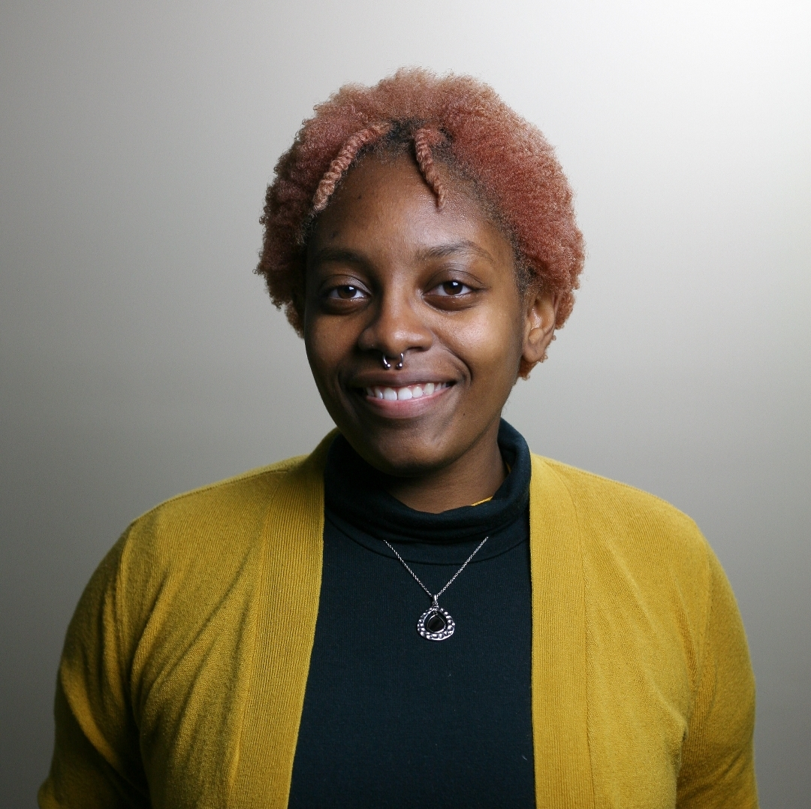

RIGHT TO START: BEREA'S CHAPTER!
In alliance with Victor Hwang’s mission,and his Right to Start Organization, Entrepreneurship for the Public Good (EPG) is working to advocate for novice entrepreneurs, new startup ventures, and any other individuals wanting to start small and large scale projects!
Here you will find information about the Right to Start organization, Victor Hwang’s Manifesto, EPG’s mission in the Berean Community, and how we can help each other to jumpstart this region’s aspirations!
READ MANIFESTOFAQs
“While political leaders want to hear from citizens, most entrepreneurs and other starters are often too busy (or too cash-strapped) to advocate for themselves.” ~Victor W. Hwang
Would you like to be involved or find out more about our Start-Warming Parties?
SIGN UP-

Sabina Sabais a Psychology major and is expected to graduate in May 2022 from Raleigh, North Carolina. She anticipates earning a Neuropsychology PhD to study how external factors influence the mental wellness of Black adolescents.
-
Gaston Jarjuis a rising Sophomore from The Gambia, West Africa. He is majoring in Computer Science and a double minor in Business Administrations and Mathematics. Gaston is passionate about Machine Learning, Entrepreneurship and Data Analysis.
-
Megan Meadors is a Business Administration and Theatre Double Major and is expected to graduate in May 2023. She is from Lexington, Kentucky and hopes to one day work on theatre productions as a Stage Manager.
-

Bryar Frank is a Transfer student majoring in Computer Science and Mathematics. He expects to graduate in Dec 2022.He is from Rocky Mount, North Carolina and is striving to travel abroad while pursuing a PhD related to software engineering.
Founding Members:
What is EPG doing about it?
Since connections are essential to a thriving community, our team in EPG will be focusing on virtually connecting all levels of this community, including novice entrepreneurs with the drive to start something new with civic leaders, supporters, coaches, and even retirees with a knowledge base looking to pass down their education to the new generations. We are starting this venture by hosting Start-Warming Parties sometime in August to showcase these individuals and get them connected to the community members willing to help. These Start-Warmers are not directed to a particular sector of innovation, but to all in the community, as this aligns with Victor’s vision that we never know who the next big innovator will be, while also not knowing who will be their best supporters!
How can you help?
Victor Hwang promotes the idea that “1000 = 3 + 997” which means that out of every 1000 people, about 3 of them will try to start a new venture. However, the whole of the 1000 also contains the other 997. He supports the evidence that the 997 are essential to the empowerment of the 3, and that without each and every individual, a small community cannot continue to prosper and innovate. This means that you are part of that 1000, whether you consider yourself a starter, a supporter, or just an advocate with valuable insights, concerns, and knowledge.
Why this matters?
As Victor W. Hwang puts it, “It’s in those individualized economies-instead of the macro economy-where real lives are
lived, where we also find hope.” Thus,we hope that you will join us in the fight to break the barriers that “small” businesses encounter.
“I believe each of us has the innate spark to start something new, make an idea into reality, create value in the world... Right to Start will fight to build a new civic infrastructure to expand entrepreneurial opportunity for everyone.”
~Victor W. Hwang